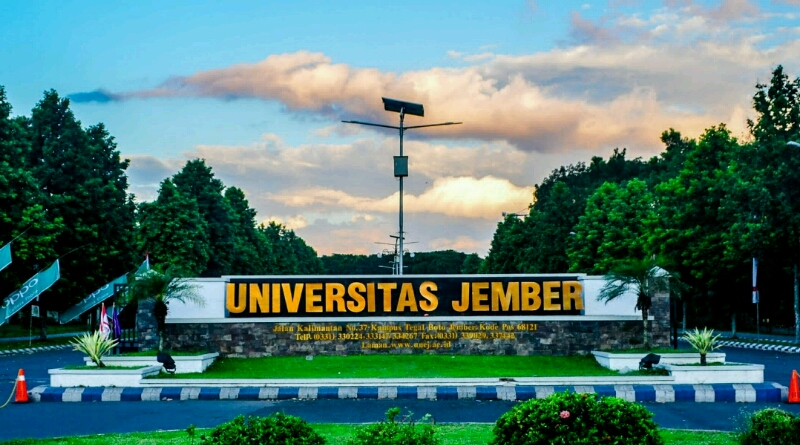

SEJARAH UNIVERSITAS JEMBER
Cikal bakal Universitas Jember berasal dari gagasan dr. R. Achmad bersama-sama dengan R. Th. Soengedi dan R. M. Soerachman yang bercita-cita mendirikan perguruan tinggi di Jember. Untuk mewujudkan cita-cita tersebut pada tanggal 1 April 1957, ketiganya membentuk panitia yang diberi nama Panitia Triumviraat dengan komposisi Ketua dr. R. Achmad; Penulis R. Th. Soengedi, dan Bendahara R. M. Soerachman. Selanjutnya Panitia Triumviraat ini pada tanggal 5 Oktober 1957 membentuk yayasan dengan nama Yayasan Universitas Tawang Alun (disahkan dengan Akta Notaris tanggal 8 Maret 1958 Nomor 13 di Jember). Yayasan Universitas Tawang Alun inilah yang kemudian mendirikan universitas swasta di Jember dengan nama Universitas Tawang Alun yang kemudian disingkat UNITA.
Dalam perjalanannya, ketiga tokoh tersebut mendapatkan dukungan penuh Bupati Jember saat itu, R. Soedjarwo. Berdasarkan Surat Keputusan Menteri PTIP No. 151 Tahun 1964 tanggal 9 Nopember 1964, tentang didirikannya Universitas Negeri di Jember. Usaha tanpa kenal lelah sejak tahun 1957 itu akhirnya berhasil menjadi kenyataan, Universitas Negeri Djember berdiri ! Pada awal berdirinya pada tahun 1964, Universitas Negeri Djember yang disingkat UNED, memiliki lima fakultas, terdiri dari Fakultas Hukum di Jember, dengan cabangnya di Banyuwangi, Fakultas Sosial dan Politik dan Fakultas Pertanian di Jember, Fakultas Ekonomi dan Fakultas Sastra di Banyuwangi. Dengan rektor pertama dijabat oleh dr. R. Achmad. Kepemimpinan dr. R. Achmad dilanjutkan oleh Letkol. Soedi Harjohoedojo (1967-1969), Letkol. Soetardjo, SH (1969-1978) dan Kol. Drs. H. R. Warsito (1978-1986).
Baru semenjak tahun 1986, rektor Universitas Jember dijabat oleh sivitas akademika-nya sendiri, yakni oleh Prof. Dr. Simanhadi Widyaprakosa (1986-1995), Prof. Dr. Kabul Santoso, MS (1995-2003), Dr. Ir. T. Sutikto, MSc (2003-2011) dan Drs. Moh. Hasan, Msc Ph.D (2012 sampai sekarang).